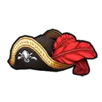

Tricorne de corsário
Chapéu de ladino · Tier 10 · Nível 30
Nada diz "eu sou o capitão" como isso.
Atributos
Defesa
225
Economia
Valor
605.000
Tempo de fabricação
7h
XP do comerciante
58.500
Trabalhadores: Alfaiate 25, Mestre 21, Ferreiro 18
Receita


Marcos do projeto
7
Tempo de fabricação -20%
18
-58 Couro
32
Desbloqueia projeto: Capucho de Penumbreterna
50
Valor +25%
80
Chance de qualidade +1